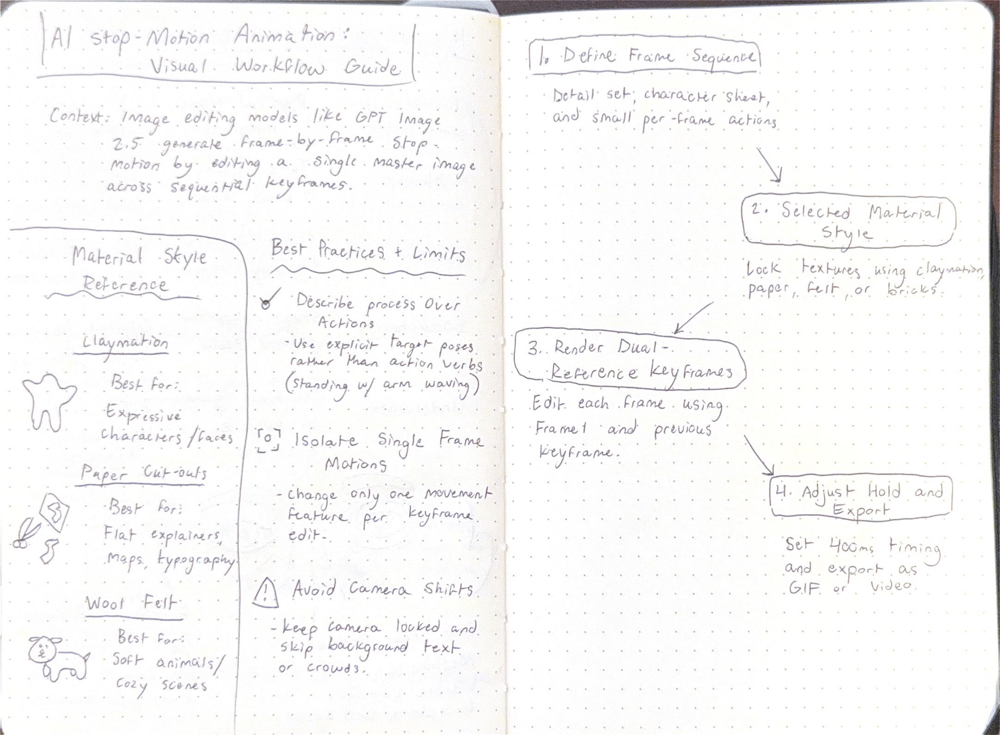

Artificial Motion / Interaction 3
Building a shot one pose at a time
How to Make Stop-Motion Animation with AI (GPT Image 2.5 Tutorial)
PixCirce Team — PixCirce AI
Online tutorial / AI animation workflow guide
Why I chose this source
This article explores a different approach to creating AI-generated stop-motion animation by using AI image-editing models to generate individual frames rather than relying on traditional AI video generation. It explains how to maintain consistent characters, backgrounds, and lighting while making small adjustments between frames to simulate stop-motion movement. This is especially relevant to my project because it offers a practical workflow to experiment with and compare against AI video generators. It also identifies limitations, such as character inconsistencies and unwanted visual changes, that could help me evaluate where AI succeeds and struggles in recreating stop-motion animation.
What I checked
I examined PixCirce's claim that AI image-editing models can reproduce the actual stop-motion process rather than just its visual appearance. I compared this with Autodesk's explanation of traditional stop motion, which involves physically manipulating objects and photographing each movement individually. While PixCirce's method follows a similar frame-by-frame structure, I found that it simulates the process digitally rather than recreating it physically. This distinction is important to my project because I want to explore whether AI can convincingly replicate the movement and handmade qualities of stop motion, not just generate something that looks like it.
Visual notes




How this shaped my project
This interaction helped me better understand how AI can be used to create stop-motion animation beyond simply generating a video that looks like stop motion. The PixCirce article introduced a different approach that involves generating individual frames with AI and making small adjustments between each frame to create movement. I found this interesting because it more closely resembles the traditional stop-motion process while still relying on AI to generate the visuals.
AI helped me break down this workflow and recognize how it differs from using text-to-video generators like Google Flow. However, I also had to consider the article's claims about consistency and accuracy, especially since the information comes from a company promoting its own tools. I also learned that although this process resembles traditional stop motion, it doesn't involve physically manipulating and photographing objects.
This interaction has shifted my focus toward exploring multiple methods of creating AI-generated stop motion rather than relying on a single tool or workflow. I'm especially interested in comparing the amount of creative control each method provides and whether one produces more convincing results than the other.
For my final project, I want to create a short animation that showcases both the potential and limitations of AI within this medium. Rather than hiding mistakes or inconsistencies, I want to document them as part of the creative process. My next step is to experiment with AI-generated individual frames and compare the results against AI video generation, focusing on movement, visual consistency, and how much control I have over the final animation.